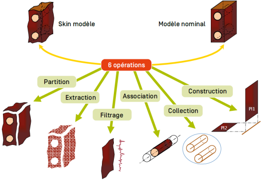

Définition
Une spécification par zone est une condition sur une dimension définie par une caractéristique au moyen d'opérations sur des éléments géométriques, identifiés à partir du skin model.
Dimension : linéaire
Caractéristique :\( \text{d}= \text{max(}di \text{)}\) (distance maximale)
Condition : \(\text{d} \leq \frac {t_g} 2\) (« \(t_g\) » = tolérance, ici \(t_g = 0,08mm\))
Opérations :
